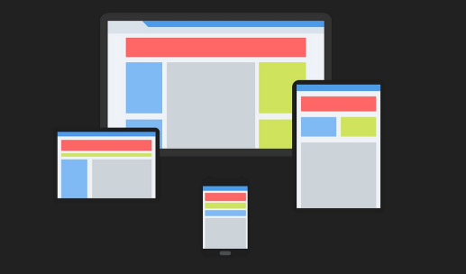

การออกแบบเว็บที่ตอบสนองและแสดงผลได้ดีบนอุปกรณ์ต่างๆหรือขนาด หน้าจอที่หลากหลาย เช่น จอคอมพิวเตอร์ หรือ สมาร์ทโฟน เป็นต้น
Media Queryคือ รูปแบบการเขียน Style ให้แสดงผลตามขนาดหน้าจอ ที่แตกต่างกัน
@media ขนาดอุปกรณ์ {
…..style…..
}
@media screen , printer {
…..style…..
}
● 320px—480px: Mobile devices
● 481px—768px: iPads, Tablets
● 769px—1024px: Laptops
● 1025px—1200px: Desktops
● 1201px เป็นต้นไป — TV , Widescreen